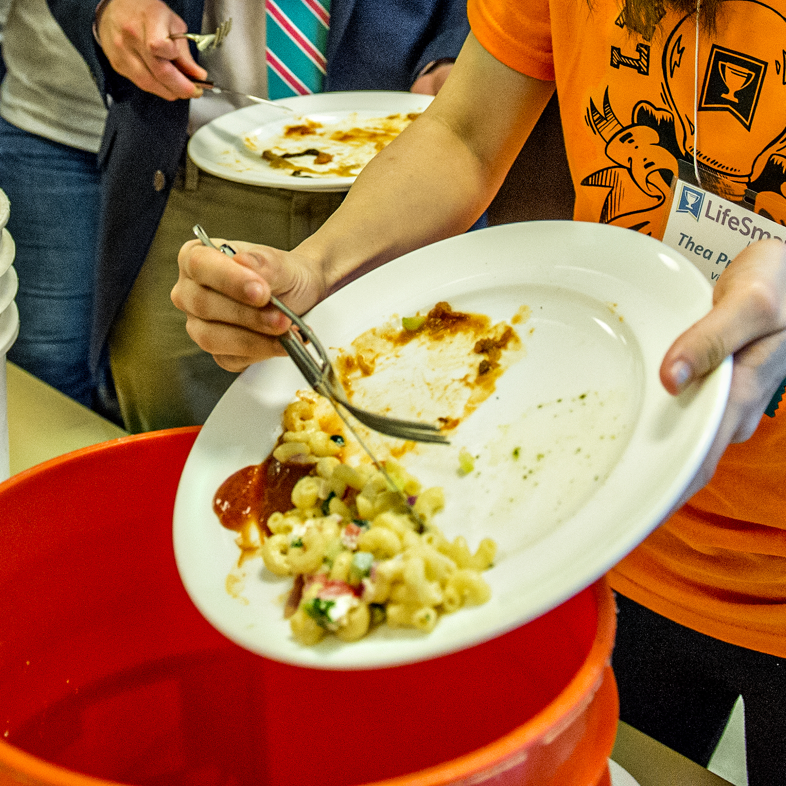

Welcome to Our Website
In our world, environmental challenges, ranging from climate change to ocean acidification, might seem overwhelming, yet it's crucial to take action, regardless of the scale. Changing the world begins with one step, and schools are a perfect place to start. Remarkably, approximately 90% of a school's environmental impact stems from facets like food transport, infrastructure, and uniforms. Notably, food contributes to nearly 30% of greenhouse gas emissions. Of all food options, beef stands out as a significant contributor, generating substantial emissions from packaging to eventual waste disposal and continuously amplifying its carbon footprint. Due to the unsustainability of animal protein, whole grains need to be embraced instead. By limiting animal protein consumption and embracing sustainable alternatives like whole grains, schools can significantly mitigate their environmental impact and set a precedent for positive change.
Learn More